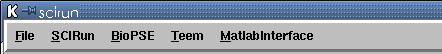
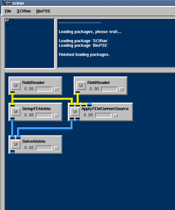
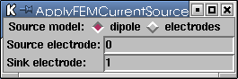
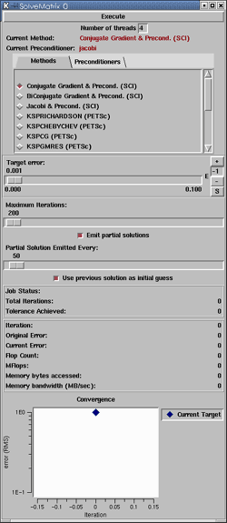

|
Chapter 5: Bioelectric Field Simulation
Chapter Overview Chapters 1-4 work with dataflow programming. Networks were built to visualize existing datasets. This chapter demonstrates the construction of a network that computes simulated voltages for a realistic volume conductor problem. Thus far, modules from the SCIRun package have been used (packages are logically grouped sets of modules). Figure 5.1 shows a SCIRun menu bar from a build that features several additional packages. To learn more about packages, see User's Guide 6.0, Packages. Modules within the SCIRun package serve as general purpose tools and are not targeted towards any specific application. This chapter uses modules from the BioPSE package; a set of tools specifically written for the modeling, simulation, and visualization of bioelectric field problems. 
Given a volume conductor model and an equivalent dipole source, the user will compute the potentials and electric field induced by the source through the domain. Analytic solutions exist for problems of specific geometric models (e.g., cylinders or spheres). However, for most real-world problems, the solution can only be obtained through discretization. For this application, the user will discretize the domain into tetrahedral finite elements, where each element contains a conductivity tensor that defines how electricity travels through its region of the domain. Within each element, a piece-wise linear potential field is assumed (piece-wise constant electric field). The above problem is governed mathematically by Poisson's
equation: 
where Discretizing this onto the tetrahedral domain,
the divergence
of the electric field with the stiffness matrix A is approximated.
to determine the potentials, Finite element simulation network To compute the electric and potential fields given a finite element volume conductor mesh and a dipolar current source, follow these steps:
Each of the above steps corresponds to a SCIRun module.
All modules should be connected as shown in Figure 5.2. NOTE: Do not execute the net until all UI settings have been specified for each module, as described in the sections below, or the solution will not converge. 
The SetupFEMatrix module constructs a finite element stiffness matrix from a tetrahedral volume mesh. The user can choose to incorporate the local conductivity tensors into the stiffness matrix, or to use a uniform conductivity as shown in Figure 5.3. For this application, incorporate the local conductivity changes.
The ApplyFEMCurrentSource module modifies the right hand side vector to account for current sources within the model. In the module's UI, users can choose whether the current sources are due to a dipole or a source/sink electrode pair. For the Source Model option, select the dipole setting.  The SolveMatrix module solves a linear system using one of several methods as indicated in the UI.

Finally, for this simulation:
The mesh field contains the tetrahedral finite element mesh, which forms the geometry of the torso. The mesh field also contains pointers to the electric conductivity values as assigned to each element. In Poisson's equation, these are the values of sigma. The dipole field contains a single dipole vector, positioned within the torso volume that functions as the bioelectric source. Execute the network, and as the simulation progresses, the residual plot in the SolveMatrix UI converge. A finite element problem has just been solved. Save this net, it will be used in Chapter 6. SummaryChapter five, demonstrated the use of modules from the bioelectric problem solving environment (BioPSE) package. This chapter also illustrated the construction of a simulation network that computes simulated voltages for a realistic volume conductor problem.Chapter 6 will reuse the finite element simulation
network from this chapter,
as well as the visualization network from Chapter 4.
|